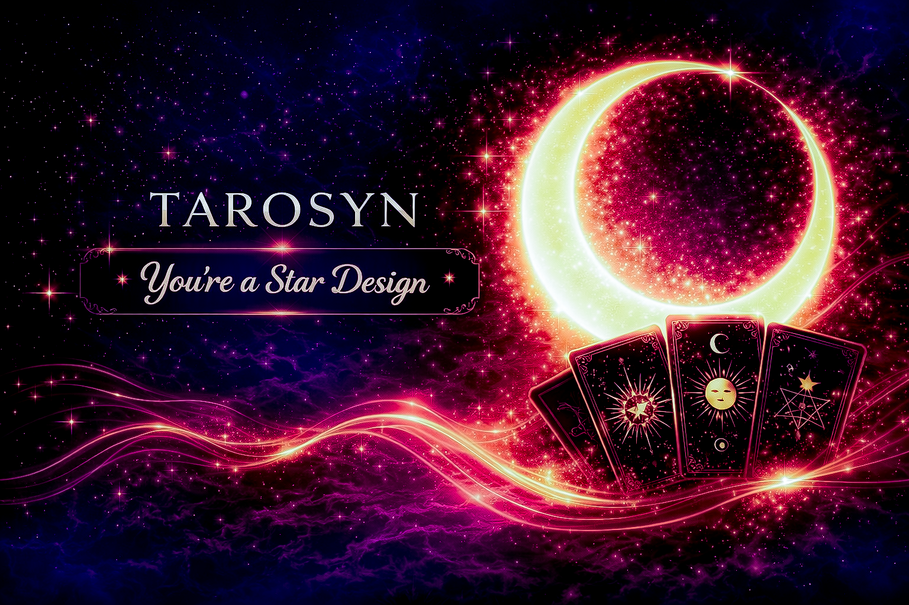
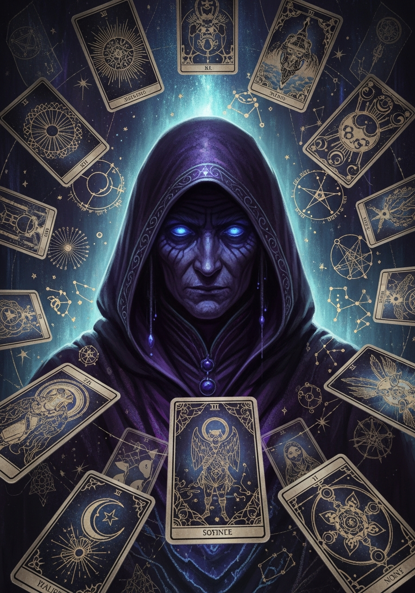
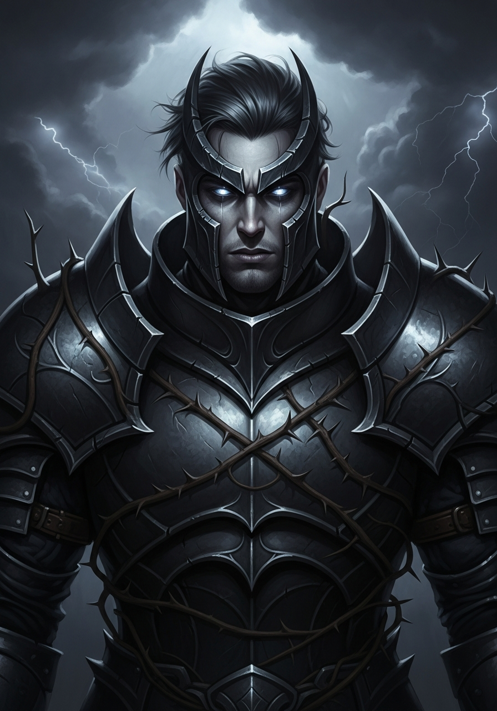

AI-Powered Readings
Deep, personalized interpretations using advanced AI that understands your unique journey

No credit card required. No subscription required.
First 14 days free. Selected users premium up to two years. Free Tier for Life.Terms of Service | Privacy PolicyEverything you need for your spiritual journey, all in one mystical experience
Deep, personalized interpretations using advanced AI that understands your unique journey
Connect your astrological profile for readings aligned with your cosmic blueprint
Save readings, add notes, and track your spiritual growth over time
Connect with fellow seekers, share readings, and build your mystical community
Explore relationship compatibility with deep astrological analysis
From daily one-card draws to the full Celtic Cross, find the spread for any question
✦ INTELLIGENT DIVINATION
Tarosyn's AI doesn't just interpret cards, it weaves your birth chart, past readings, and personal journey into every interpretation. Each reading learns from your history, creating insights that grow deeper and more personal over time.

✧ CHOOSE YOUR GUIDE
From The Oracle's ancient wisdom to Luna's lunar intuition, each mystic guide brings a distinct personality and reading style. Switch guides anytime, or let the cards choose for you. Your guide remembers your journey and adapts to your energy.
✶ COSMIC BLUEPRINT
Enter your birth details once and every reading becomes cosmically personalized. Tarosyn calculates your natal chart, tracks planetary transits, and aligns card interpretations with your unique astrological signature, including synastry for relationship readings.
◈ FORGE & COLLECT
Upload a selfie and Tarosyn's AI transforms you into a unique tarot portrait, your Hero Card. Forge new cards using Luna, our in-app currency earned through daily rituals, gratitude journaling, and community engagement. Collect rare designs and share them with friends.

▤ SPIRITUAL GROWTH
Every reading is saved to your personal vault. Add reflections, track recurring cards, and watch patterns emerge across weeks and months. Daily gratitude journaling, numerology insights, and streak tracking keep you grounded and growing.
◌ MYSTICAL COMMUNITY
Add friends, share readings, and explore relationship synastry together. Chant, our community feature, lets you witness and support others' journeys, earn Luna together, and forge rare collaborative cards. Tarosyn is better with your circle.
Join thousands of seekers who have discovered clarity through Tarosyn. Start your free trial today and unlock the wisdom of the cards.
One Moon Turn Free (14 days), plus one more when you subscribe. Cancel anytime.